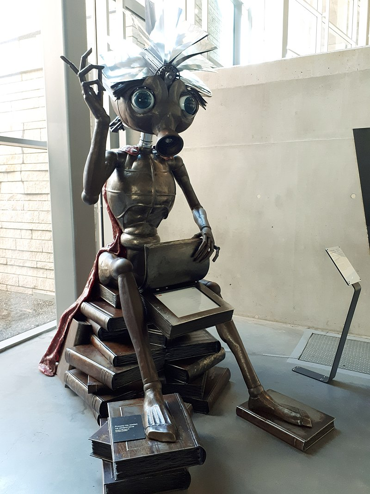

Ou: como Stanislaw Lem fantasiou uma versão exagerada do chatGPT na década de 60.
“Trurl, o famoso construtor, um dia resolveu criar uma máquina que escrevia poesia para provar a seu amigo Klapaucius quem era o melhor construtor do universo.”

Mais ou menos assim começa o conto “The eletronic Bard” the Stanislaw Lem, escrito na década de 60. Publicado no livro “Cyberiads”, inaugurou um gênero literário bizarro que mistura ficção científica e contos de fada medievais com a ironia de Voltaire e a prosa macarrônica de Rabelais. O livro narra as aventuras de Trurl e Klapaucius, dois robôs inventores capazes de criar praticamente qualquer coisa (como a máquina que materializava tudo que começava com “n”, ou uma miniatura de um reino que se revoltou contra o rei, ou o robô gigante que dizia que 2+2 é 7 e tentou matar Trurl, ou a máquina que imprimia todas as verdades do universo). Ambos tentam cumprir pedidos quase impossíveis de reis de toda a galáxia em troca de ouro, e quase sempre acabam arrumando problema e tendo que fugir.
Gosto tanto dessa história que vou recontar ela do meu jeito abaixo, entre aspas:
“Trurl juntou 820 toneladas de livros sobre cibernética e 1200 toneladas de livros de poesia e se pôs a ler. Quando cansava de uma equação, lia um verso1. Percebeu então que a parte mais difícil da máquina seria o programa em si, e não o hardware. O ‘programa’ na cabeça de um poeta era, afinal, escrito pela civilização do poeta; e esta, por sua vez, era fruto das civilizações anteriores. Trurl então percebeu que seria mais fácil criar um universo virtual (desde o big bang!) e deixar naturalmente o poeta surgir de uma versão cibernética da Terra.”
Aqui há um paralelo interessante com os large language models (LLM) atuais, como o ChatGPT e o Google Bard2: em vez de ensinar gramática e rimas e poesia a um algoritmo (isto é: em vez de passar todas as instruções uma a uma, como se ensinaria um robô obediente), hoje monta-se uma arquitetura de rede neural capaz de aprender a interpretar textos, e então alimenta-se essa rede neural com bilhões de textos até ela aprender sozinha a falar uma linguagem e responder a humanos. Parecido com o modo como os bebês aprendem a falar!
No fim da década de 50 as redes neurais ficaram famosas por prometerem imitar o aprendizado do cérebro humano. Criou-se muita expectativa sobre robôs que pensavam como humanos e andariam por aí resolvendo tarefas difíceis. Porém, a falta de poder computacional da época e alguns projetos fracassados levaram ao “inverno da IA” que durou várias décadas. Por isso talvez para Lem parecia impossível um robô poeta, objeto de um conto rocambólico do Cyberiads.
A história segue:
“Após os preparativos, a simulação do universo começou. Trurl foi adicionando mais e mais processadores ao computador, e teve que reinciar a simulação duas vezes: uma porque um fusível queimado fez Abel matar Caim, e na outra porque algo errado aconteceu na árvore evolutiva e em vez de termos os grandes macacos (great apes) surgiram cortinas cinzas (gray drapes). Passou-se a Antiguidade, a Idade Média, as reformas, e as revoluções. Ao chegar no século 20, com as grandes guerras, Trurl teve que jogar água na máquina que não parava de esquentar e vibrar. Civilizações surgiram e se foram a cada 25 mil anos, e Trurl precisava adicionar mais e mais fitas para salvar todos os dados. Tudo isso para obter um poeta!
Após milhões de anos na simulação, Trurl escolheu o melhor poeta de todos. Ajustando o sensor de emotividade, adicionando um campo semântico e uma alavanca filosófica, tudo o que o poeta disse foi “Eu tinha um sapo”. Trurl continuou mexendo na máquina, adicionando filtros de clichê, um alternador de rimas, retirando alguns circuitos lógicos e por fim colocando um narcistor egocentripetal3 até que ela finalmente produziu um poema razoável.
Extasiado, Trurl chamou Klapaucius para ver sua criação. Klapaucius estava cético e a princípio achou que os poemas do bardo eletrônico já estavam escritos num banco de dados, e que o bardo era apenas um recitador de coisas prontas. Para testá-lo, pediu que ele fizesse ‘um poema de amor, lírico, pastoral, expresso na linguagem da matemática pura; com bastante álgebra tensorial, um pouco de topologia e talvez cálculo avançado.’ Trurl ficou indignado e com medo de que o bardo quebrasse, mas ele começou um enorme poema assim4:
[…] In Riemann, Hilbert or in Banach space
Let superscripts and subscripts go their ways
Our asymptotes no longer out of phase,
We shall encounter, counting, face to face.
I’ll grant thee random access to my heart,
Thou’lt tell me all the constants of thy love;
And so we two shall all love’s lemmas prove,
And in our bound partition never part.
[…] I see the eigenvalue in thine eye,
I hear the tender tensor in thy sigh.
Bernoulli would have been content to die,
Had he but known such \(a^2 cos(2 \phi)\)!

Klapaucius inventou uma desculpa qualquer e foi embora, visivelmente abalado.
Pouco tempo se passou até que notícias sobre o bardo chegassem nos poetas genuínos - isto é, ordinários. Ofendidos, resolveram ignorar a existência da máquina. Mas alguns curiosos foram visitar o bardo, que os recebeu educadamente com suas pilhas de poemas. Esses poetas eram vanguardistas, e o bardo escrevia apenas no estilo clássico. Os poetas caçoaram dele e foram embora. A máquina, porém, se auto-programava, e além disso tinha um aplificador-de-ambição com circuitos de busca-pela-glória. Rapidamente notou-se uma mudança: o bardo começou a fazer poemas tão intrincados e carregados de significados que se tornaram praticamente incompreensíveis.
Os poetas continuavam indo até a casa de Trurl encontrar o bardo, mas mal começavam um poema e o bardo, imitando o estilo do poeta, lançava torrentes de rimas para humilhar o pobre visitante. Alguns poetas cometeram suicídio, outros organizaram protestos exigindo o desligamento da máquina, mas além deles ninguém parecia se importar: o bardo, escrevendo sob centenas de pseudônimos, tinha um poema para cada ocasião, do tamanho desejado, e de tal qualidade que qualquer revista seria comprada apenas pelos versos. Todos conheciam os poemas do bardo eletrônico de Trurl e suas rimas deliciosas; elas estavam em todos os jornais e revistas. Alguns até desmaiavam de prazer ao ler seus poemas.”
Aqui outro paralelo curiosíssimo com a atualidade: artistas protestando contra a arte gerada por IAs, enquanto empresas usam essas tecnologias para diminuir custos. Para um dono de empresa, é mais barato pagar o ChatGPT4 do que um redator, ou gerar imagens pelo Dall-E 3 do que pagar um ilustrador. Além dos próprios artistas, são poucos os que se incomodam a ponto de ir contra as máquinas artistas.
“Trurl começou a ter problemas por causa de sua invenção. Os poetas clássicos não lhe incomodavam, pois eram quase todos velhos e inofensivos; se limitavam a jogar pedras na sua casa ou esfregar susbtâncias mal-cheirosas em suas paredes. Os mais novos, porém, já eram piores: um deles era tão bom com versos quanto na porrada e fez Trurl parar no hospital. Ainda internado, os protestos continuavam. Mais e mais poetas levavam maletas com rifles em vez de poemas para tentar destruir o bardo: vão, pois as balas ricocheteavam em seu enorme exterior metálico. Ao sair do hospital, Trurl decidiu então desligar o bardo para sempre para poder ter paz.
Mas, ao aproximar-se mancando da máquina, ela percebeu a intenção de Trurl e recitou um pedido de misericórdia tão eloquente e apaixonado que o famoso construtor saiu dali em lágrimas. No mês seguinte, ao receber a conta de energia elétrica, Trurl quase caiu de sua cadeira. Durante a noite, desligou o bardo da tomada, desmontou-o, colocou-o em sua nave e levou-o até um asteroide, onde o montou junto de uma pilha de material radiativo para servir de energia.
A história não acaba aí. O bardo, sem ter como publicar seus poemas, resolveu transmiti-los em todas as frequências de onda, fazendo com que os passageiros das naves que por ali passavam entrassem num estado de estupefação e sofressem ataques de êxtase. O Comando das Frotas Cósmicas enviou um time de técnicos para resolver o problema, mas o bardo improvisou diversas baladas que os fizeram chorar. Resolveram então enviar outro time de técnicos, dessa vez surdos, mas a máquina fez uso de pantomimas e também eles ficaram maravilhados. Após isso, começou-se a aventar a possibilidade de uma bomba atômica no asteroide, mas um rei de uma estrela vizinha apareceu e levou a máquina embora para seu reino.
Finalmente Trurl pôde voltar a aparecer em público.
Algumas supernovas começaram a explodir de maneira estranha no horizonte, e havia rumores de que isso estava relacionado com poesia. De acordo com um relato, o rei que levou o bardo, movido por um estranho capricho, havia conectado o bardo a uma constelação de supergigantes, transformando cada linha de verso em uma estupenda proeminência solar: assim, o maior poeta do universo era capaz de transmitir suas criações termonucleares para todo o espaço. Mesmo que esse relato fosse verdadeiro, era distante demais para incomodar Trurl, que jurou nunca mais fazer um modelo cibernético da Musa.”

O que acontecerá quando as máquinas quiserem continuar produzindo arte e ninguém mais for consumi-las? Será que elas aprenderão a apreciar a arte uma das outras como nós fazemos? As máquinas artistas de hoje estão quase a ponto de superar o brilhante bardo eletrônico do Lem, e é difícil imaginar o que virá depois…
Footnotes
era assim que eu estudava Análise Funcional no doutorado↩︎
que não tem relação com o Eletronic Bard do Lem, e sim com Shakespeare↩︎
Lem é um mestre na arte de inventar nomes ridículos que parecem de verdade↩︎
deixei o poema em inglês como na versão que li; o original é em polonês, e vou evitar aqui a lambança de traduzir uma tradução↩︎